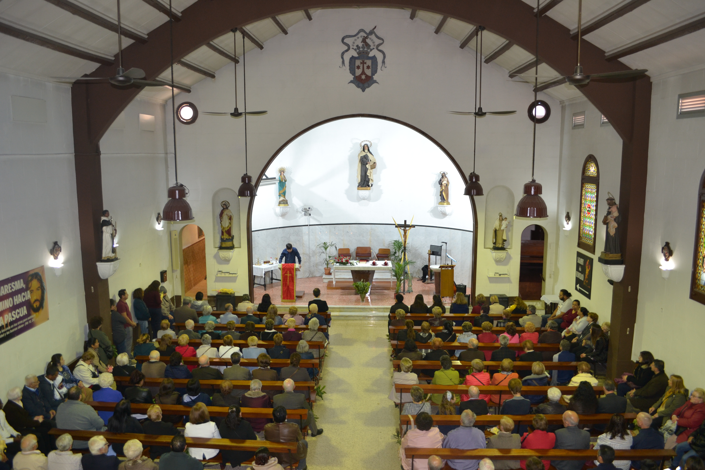
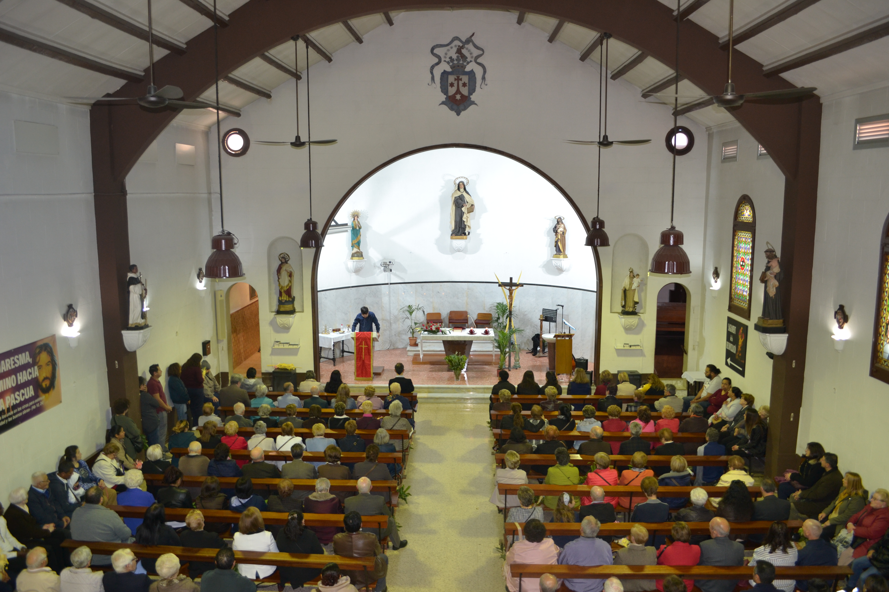
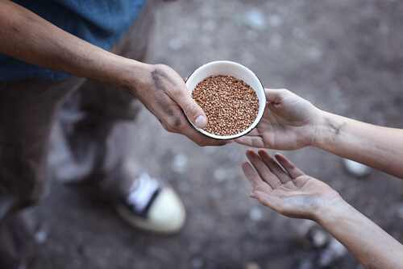
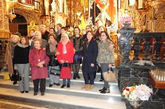
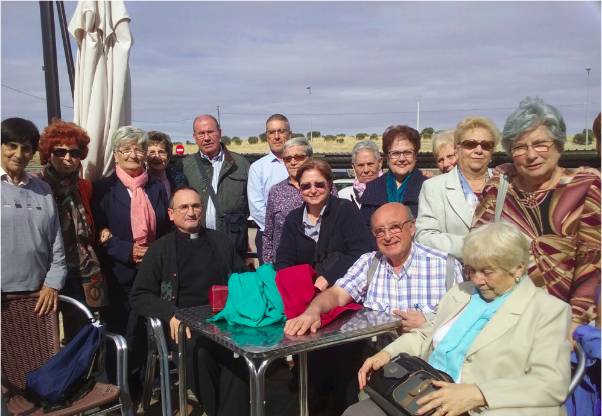
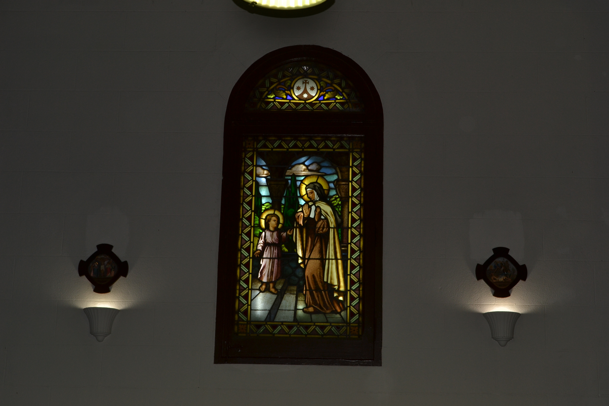

Misa dominical de las 11:00h y actos eucarísticos
De las misas que se celebran durante el fin de semana, desde el punto de vista de animación, destaca la de las 11:00h.

De las misas que se celebran durante el fin de semana, desde el punto de vista de animación, destaca la de las 11:00h.

Mn. Sols administra el sacramento del Perdón de manera fija los sábados
Mn. Sols administra el sacramento del Perdón de manera fija los sábados de 18:30-19'00 horas y siempre un rato antes de cada misa. Hay ceremonias bautismales al mediodía en cualquier domingo del año que se le pida. Cada tres años se celebra la Confirmación.

La labor que realiza Cáritas parroquial consiste en repartir alimentos, un día al mes, a varias docenas de familias.
La labor que realiza Cáritas parroquial consiste en repartir alimentos, un día al mes, a varias docenas de familias. Se ha creado, además, un consejo de Cáritas, de ámbito Arciprestal, para poder unificar los criterios utilizados para determinar cuál es el modo más adecuado de proceder en cada caso. Dicho criterio se aplica, actualmente, en las diversas parroquias y colegios de religiosos del arciprestazgo. Finalmente, cabe destacar que el soporte técnico se recibe por parte de los responsables de cáritas diocesana de este distrito.
Niños y adolescentes reciben, de forma periódica, una formación cristiana
Niños y adolescentes reciben, de forma periódica, una formación cristiana que les prepara para recibir el sacramento de la eucaristía y el de la confirmación (este último a partir de los 14 años).
Cada 8 sábados, por la noche, un grupo de 6 o 7 matrimonios trabaja, con ayuda del rector
Cada 8 sábados, por la noche, un grupo de 6 o 7 matrimonios trabaja, con ayuda del rector, algún documento del papa. La reunión dura 1h y se realiza un pequeño pica pica.
Mn. Sols atiende a gente mayor en sus casas el domingo último de cada mes
Mn. Sols atiende a gente mayor en sus casas el domingo último de cada mes si estos asi lo solicitan medinate las vias de contacto de la web y es ayudado por un grupo de voluntarios que van a residencias de la tercera edad.

Cada 8 sábados aproximadamente un pequeño grupo de jóvenes acompañados de algún matrimonio comentan con el rector el evangelio del domingo.
Por otro lado tambien cada 8 sabados aproximadadmente un poequeño grupo de jovenes acompañados de algun matrimonio comentan con el rector el evangelio del domingo.

Grupo de señoras que se reúne cada mes con una religiosa quien las enriquece en el fervor a la Eucaristía
Grupo de señoras que se reúne cada mes con una religiosa quien las enriquece en el fervor a la Eucaristía y cada miércoles, a las 19'30 horas, hay una media de hora de bendición con adoración al Santísimo.
Desde hace muchos años, un equipo de personas voluntarias limpia la iglesia una vez al mes.
Una peculiaridad de nuestra parroquia es que un Un equipo de personas limpian la iglesia un día al mes, lo hacen de manera voluntaria desde hace ya muchos años.

Cada año cuando es factible, hay una salida por Pascua: una jornada con Mn. Sols donde la convivencia y el descanso ayudan a consolidar la comunidad parroquial.
Cada año cuando es factible, hay una salida por Pascua: una jornada con Mn. Sols donde la convivencia y el descanso ayudan a consolidar la comunidad parroquial.

Por ultimo hay un despacho parroquial de 6 a 7 de la tarde donde toda persona se encuentre con Mn.Sols para consultarle cosas diversas. Contacta con nosotros aquí.
Los viernes, al acabar la misa vespertina, se imparten charlas de formación sobre espiritualidad litúrgica, bíblica y moral católica.
Los viernes, al acabar la misa vespertina, se imparten charlas de formación sobre espiritualidad litúrgica, bíblica y moral católica.

No es propiamente un centro educativo parroquial pero se respeta el humanismo cristiano en su didáctica escolar.
No es propiamente un centro educativo parroquial pero se respeta el humanismo cristiano en su didáctica escolar. Son arrendatarios del patrimonio parroquial. Entre el director-propietario del Colegio y el rector hay muy buena relación, hablan con frecuencia y se organiza alguna actividad conjunta.
Este conocido movimientos cristiano internacional para personas mayores de 55 años, que tanto bien está haciendo en todos los obispados de Europa, se haya presente en nuestra parroquia.